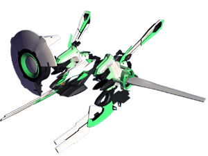
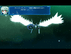
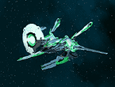
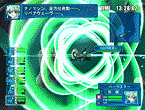

|
   |
|||
| ●特徴 |
| 紋章機５番機。 補給、修理を行うサポート専門の紋章機。 最低限の武装を持つが、最大の特徴はナノマシンを前面ケージに格納しており、それを散布することで他の機体の損傷箇所を修復することができるのである。ヴァニラ自身もナノマシン使いであるので、それの紋章機版といったところか。 パイロットの気力が充実していると、ナノマシン散布がさらに広範囲に広がる。通称「リペアウェーヴ」。 |
© BROCCOLI